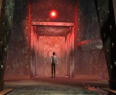
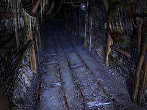
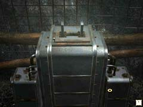
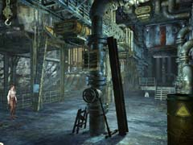
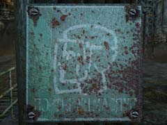
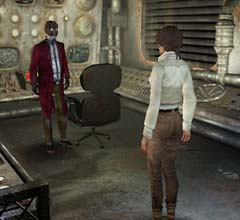
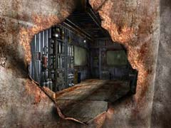

| 概要 | 地図 | |
| 淡いヒント集 | ヒント集 | 的確なヒント集 |
| 攻略最短ルート | Syberia 攻略へ |
|
犯人を捜して
オスカーの腕を奪った犯人を捜して、あなたはこの不気味な町の中を動き回らなければならなくなってしまった。犯人は、どこへ消えたのか? 犯人はどこへ行けば出会えるのか?
また、なぜオスカーの腕を奪ったのか? 聞きたいことが山積みである。あなたがやらなければならないことは、 ・坑道へ続く道を探す ・坑道の明かりを確保する ・パイプオルガンの近くにあるアイテムを入手する ・工場のどこかにいる犯人を捜す ・犯人のいろいろなことを聞く ということである。

・犯人が逃げた扉はここである。 ・どうやっても開かない。別の道があるはずだ。

・ここが坑道である。使われなくなって久しいので、もはや廃坑である。 ・どうやったら明かりが付けられるのか?

・坑道の隅にあるこの装置が何か役に立つのだろうか? ・工場にあるパイプオルガン。非常に大きい。 ・鍵盤の前にカラクリ人形がある。この人形に付いている腕がオスカーのものかもしれない。 ・あなたが探さなければならないアイテムはどこにあるのか?

 ・ここの行き止まりの看板を見て欲しい。 ・この看板さえなければ、上の区画へ移動できそうだ。 ・それでは、看板をどうやって外せばいいのだろうか。

・こいつが犯人である。 ・彼はなぜオスカーの腕を奪ったのか? その理由が明らかになるだろう。 ・彼は条件付きでオスカーの腕を返すという。どうすれば、返してくれるのか? ・この部屋に、オスカーの腕を取り戻すヒントがあるはずだ。

・人型建物を使って行ける場所である。 ・壁に穴があいているので、中が見える。 ・中は広くて、何かありそうだ。どうやったら入れるだろうか? |
| 概要 | 地図 | |
| 淡いヒント集 | ヒント集 | 的確なヒント集 |
| 攻略最短ルート | Syberia 攻略へ |